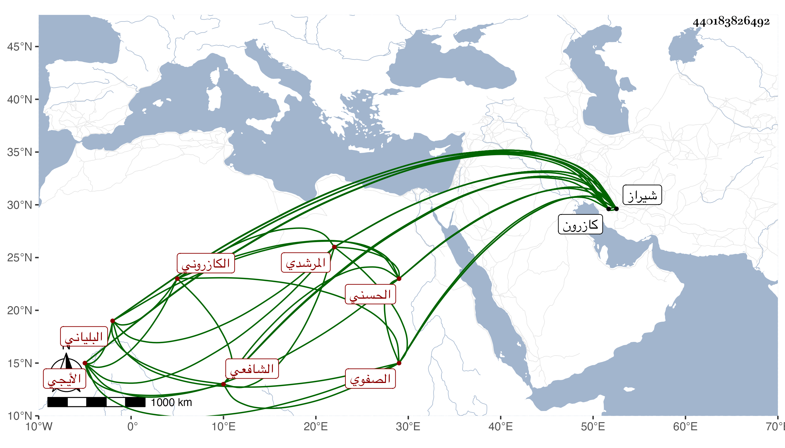

0902Sakhawi.DawLamic.ITO20230111-ara1.EIS1600.440183826492
Biography ID: 440183826492
298
أحمد بن محمد بن إسماعيل بن حسن جلال الدين بن المولى قطب الدين ابن العلامة تاج الدين بن السراج الكربالي نسبة لكربال من شيراز المرشدي نسبة لجد أمه الشافعي عفيف الدين الجنيد الكازروني البلياني خليفة الشيخ أبي إسحاق الكازروني أحد المسلكين الصفوي نسبة للسيد صفي الدين الحسني الأيجي لكون جدة والده لأمه أخت الصفي المذكور الشافعي . ولد في رمضان سنة إحدى وستين وثمانمائة بشيراز ونشأ بها فأخذ في النحو الصرف والمعاني والبيان عن ملا صفي الدين محمود الشيرازي النحوي الشافعي تلميذ غياث الدين الذي كان يقال له سيبويه الثاني ولذا قيل لهذا سيبويه الثالث ، والمنطق عن ملا جلال الدين محمد الدواني قريبة بكازرون الشافعي قاضي شيراز ومفتيها والفرد في تلك النواحي ، وفي الفقه عن السيد وجيه الدين إسماعيل بن العز إسحاق بن نظام الدين أحمد الأحمدي الشيرازي الشافعي المفتي ، وكلهم في سنة أربع وأربعين أحياء ، وسمع الحديث على السيد نور الدين أحمد بن صفي الدين وحج معه في سنة ثلاث وتسعين ولقيني في التي بعدها فسمع من لفظي أشياء منها المسلسل وحديث زهير ، وحضر بعض الدروس ، وسمع الباب الأخير من البخاري وما في الصحيح من الثلاثيات والنصف الأول من مصنفي في ختمه وكتبت له إجازة في كراسة ، وهو إنسان فاضل متميز نير الشكالة فصيح العبارة ثم اختل أمره لتعاني الكيمياء وتحمل ديونا مع كثرة تزوجه وما وسمه بعد إلا الفرار لبلاده لطف الله به .
